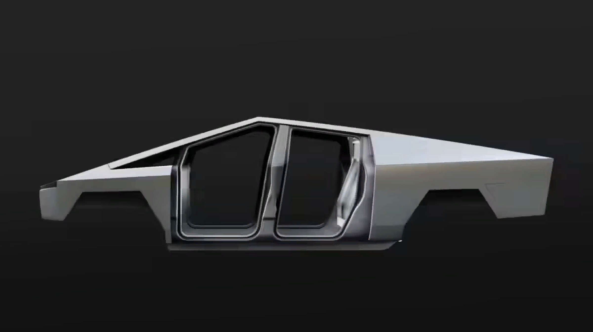

BETTER UTILITY THAN A TRUCK WITH MORE PERFORMANCE THAN A SPORTS CAR
Order now
Cybertruck is built with an exterior shell made for
ultimate durability and passenger
protection.
Starting
with a nearly impenetrable exoskeleton, every
component is designed for
superior
strength and
endurance, from Ultra-Hard 30X Cold-Rolled stainless-
steel structural
skin to Tesla
armor glass.

ULTRA-HARD 30X COLD-ROLLED
STAINLESS STEEL
If there was something better, we’d use it. Help eliminate dents,
damage
and long-term corrosion with a smooth monochrome exoskeleton that puts the shell on the
outside of the car and provides you and your passengers maximum protection.
EXOSKELETON
VERSATILE UTILITY
With up to 3,500 pounds of payload capacity and adjustable air suspension,
Cybertruck is the most
powerful tool we have ever built, engineered with 100 cubic feet of
exterior,
lockable storage — including a
magic tonneau cover that is strong enough to stand on.
VAULT-LIKE STORAGE
Space for your toolbox, tire and Cyberquad, with room to spare. Utilize
100 cubic feet of exterior, lockable
storage — including the under-bed, frunk and sail pillars.
PERFORMANCE AND EFFICIENCY
Now entering a new class of strength, speed and versatility—only possible with an
all-electric design. The
powerful drivetrain and low center of gravity provides extraordinary
traction control and torque—enabling
acceleration from 0-60 mph in as little as 2.9 seconds and
up
to 500 miles of range.